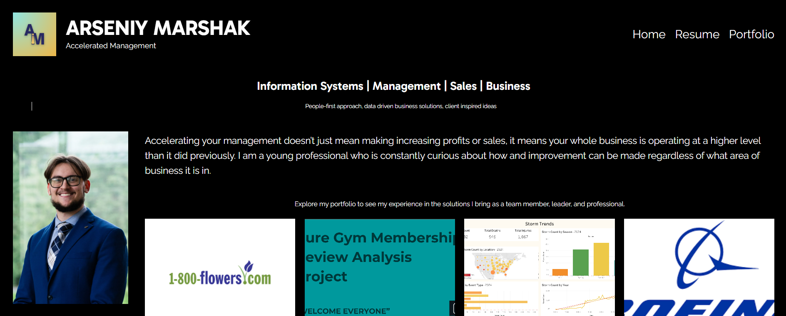

Arseniy Marshak
CSCI 202 | Dynamic Webpages | Assignments Portfolio
Final Project
Description

For the final project I decided to utilize Wordpress.com to create a personal, professional portfolio to serve as a digital space for professional interaction. Under the advisement of Dr.Dustin O'Hara I created a portfolio to host online for professionals to view my professional experience.